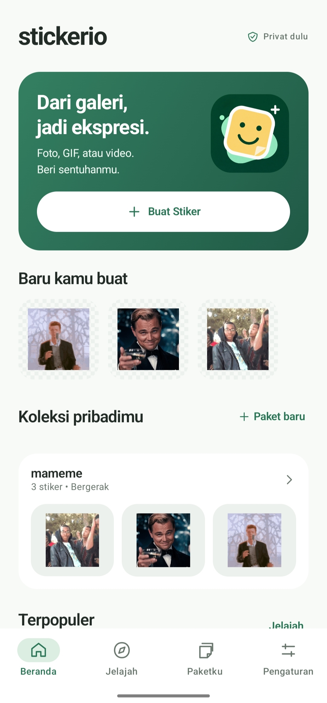
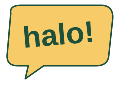
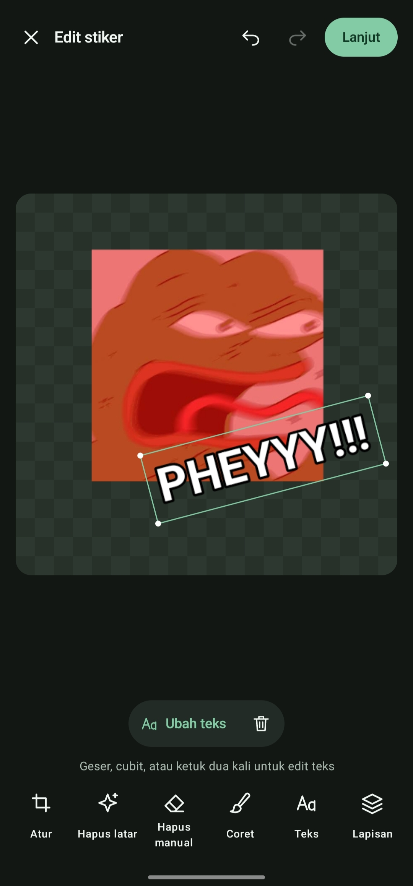
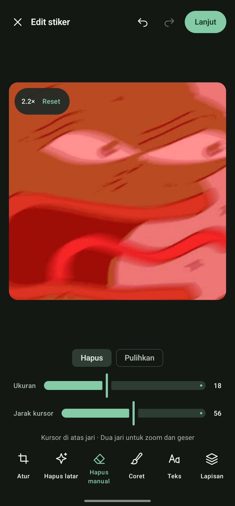
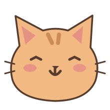
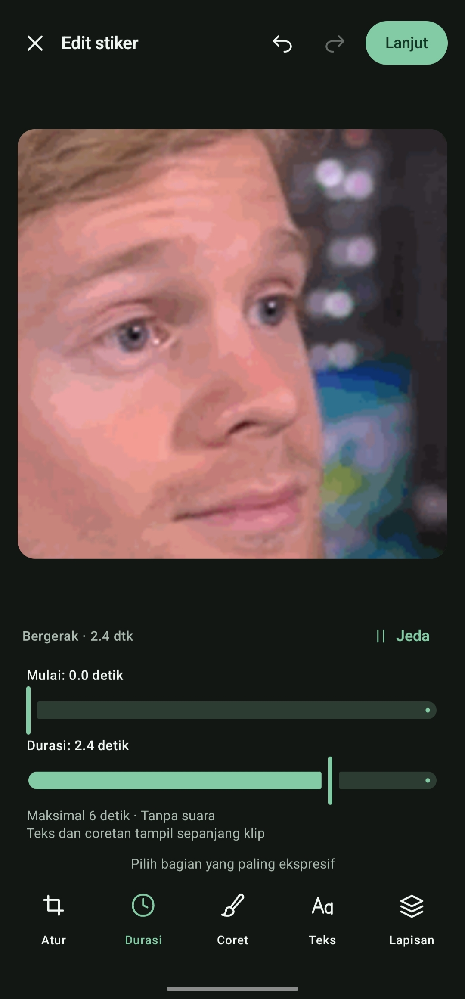
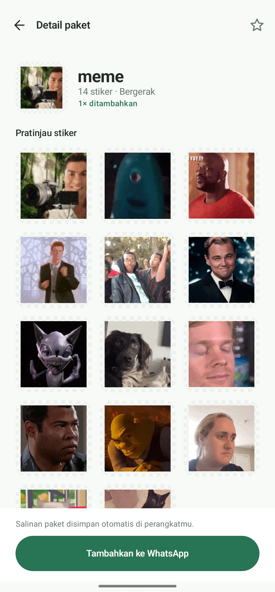

stickerio.STICKER MAKER
Dari galeri,
jadi ekspresi.
Foto, GIF, atau video. Mulai dari milikmu.


01 / 05Lima gambar potret 1080 × 1920, satu feature graphic 1024 × 500, dan ikon 512 × 512.
Desain memakai HTML, SVG orisinal, dan tangkapan UI aplikasi.
Foto, GIF, atau video. Mulai dari milikmu.


01 / 05Crop, teks, dan coretan dalam satu editor.

Zoom dan penghapus manual yang mudah dilihat.


03 / 05Ubah GIF atau video jadi stiker bergerak.

Paket privat, atau publik saat kamu siap.
